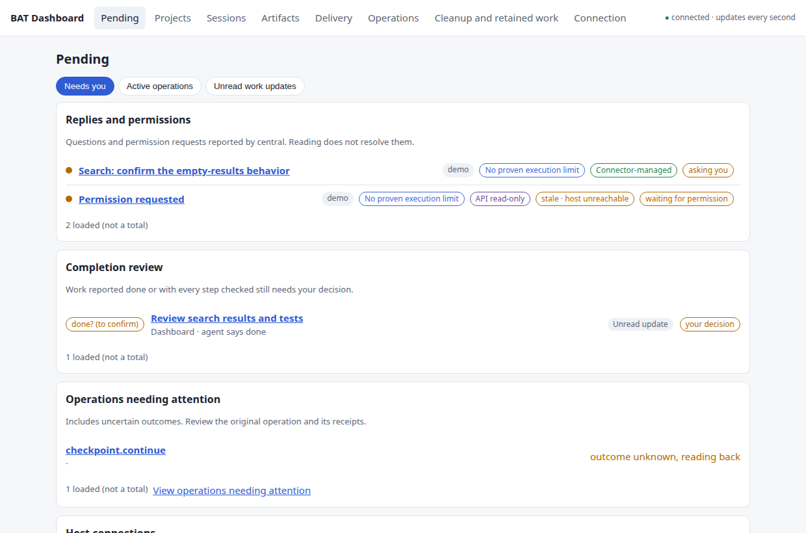
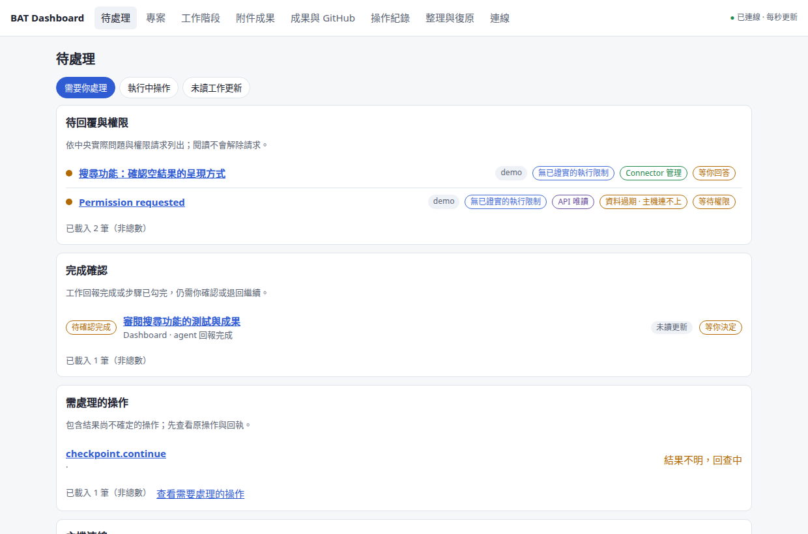
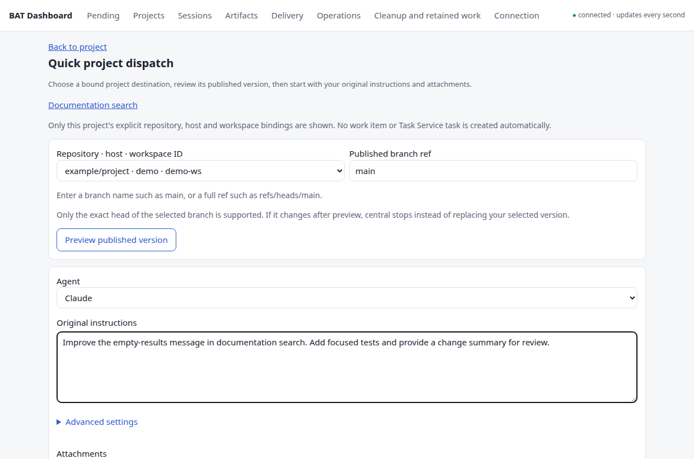
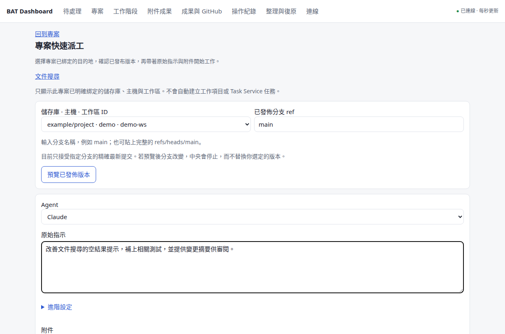

Projects & work items專案與工作項目
Hierarchy, pins, archive, original requests and acceptance criteria keep long-running work understandable.以階層、釘選、封存、原始需求和驗收條件，整理持續進行的工作。
Read the guide →閱讀說明 →BAT connections, agents and deliveryBAT 連線、Agent 與交付
Connect the fleet, dispatch agents and follow their results. Windows manages local connections and BAT startup; the shared Web and Tauri Dashboard follows work on your BAT hosts.連起主機、派出 Agent、追到成果。Windows 管理本機連線與 BAT 啟動，Web／Tauri 共用 Dashboard 追蹤 BAT 主機上的工作；你照常在 BAT 裡 coding。
Inside the product介面導覽
Read the situation before you act. Keep questions, completion review and operation recovery in their own lanes.先理解現況再操作。待回答、完成待審與操作復原各有明確的位置。




No output may mean waiting, idle or missing observations.沒有輸出可能是等待、閒置，或缺少觀測。
Accepting work, merging a PR and verifying a deployment have separate receipts.接受成果、合併 PR 和驗證部署，各有自己的回執。
Saved operation identities let you recover without guessing or dispatching twice.保存操作身分，先查回結果，避免猜測或重複派工。
From request to result從需求到成果
Keep the intent, execution and delivery together. Work stays on the selected BAT host, whichever client you use.需求、執行與交付保留關聯。無論從哪個入口操作，工作留在你選定的 BAT 主機。
Record the original request, acceptance criteria and explicitly associated repository.保留原始需求、驗收條件，明確連結 repository。
Choose the host and workspace. Review a fixed branch commit, then add instructions, a model and exact attachments.選主機與工作區，檢視分支的固定 commit，加入指示、模型與精確附件版本。
Read the conversation, answer a pending question and find the session or worktree from its project.讀取對話、回答待處理問題，從原專案找回 session 與 worktree。
Review fixed candidate commits in a separate integration workspace and bring selected results into one PR.在獨立整合工作區檢視固定候選 commit，把選定成果送進同一個 PR。
Merge the reviewed PR scope. A configured deployment recipe checks the actual version and runtime evidence.合併已檢視的 PR 範圍；有部署 recipe 時，核對實際版本與 runtime 證據。
Preview eligible cleanup, see why resources are retained and keep their history available.先預覽可整理的資源、了解保留原因，整理後仍可查歷史。
Across hosts, code travels through an explicitly bound GitHub repository and a published commit. Human checkouts and unpublished workspaces are not silently moved.跨主機程式碼透過明確綁定的 GitHub repository 與已發布 commit 取得；不默默搬動人的 checkout 或未發布工作區。
The working surface日常工作所需
Hierarchy, pins, archive, original requests and acceptance criteria keep long-running work understandable.以階層、釘選、封存、原始需求和驗收條件，整理持續進行的工作。
Read the guide →閱讀說明 →Readable code and tables, copying, preserved reading position and authorized session actions.閱讀程式碼與表格、複製原文、保留閱讀位置，並執行已授權的 session 操作。
Read the guide →閱讀說明 →Capture and review immutable revisions; keep the operation or task that produced each result.擷取、審閱不可變版本，保留每份成果的 operation 或 task 來源。
Read the guide →閱讀說明 →Fixed integration previews, PR actions, deployment history, version checks and supported rollback recipes.固定整合預覽、PR 操作、部署歷史、版本驗證與已支援的 rollback recipe。
Read the guide →閱讀說明 →Stable IDs, resource relations and saved receipts retain context across refreshes and disconnects.以穩定 ID、資源關聯及回執，在刷新與斷線後保留脈絡。
Read the guide →閱讀說明 →CLI and MCP share central permissions. Hermes and Grokbot use adapters from the canonical skill.CLI 與 MCP 共用中央權限；Hermes／Grokbot 使用由共用 skill 產生的配接。
Read the guide →閱讀說明 →Connections, control and execution連線、中央控制與執行
Windows startup and native resources remain part of the product. Projects organize work across this system; they do not replace it.Windows 啟動與原生資源一直是產品的一部分。專案管理把這些工作整理起來，並沒有取代底下的系統。
Owns selected SSH tunnels, route/readiness checks, BAT profile windows and sign-in startup. Rust or the existing PowerShell backend; one proven owner. Provides connection paths to BAT / central and optional configured central bootstrap.管理選定 SSH tunnels、路由／就緒檢查、BAT profile 視窗與登入啟動。Rust 或既有 PowerShell backend 共用唯一 owner 規則；提供 BAT／中央連線，並支援已配置的中央 bootstrap。
↓ bat-remote/v2 and governed operations ↓↓ bat-remote/v2 與受控操作 ↓
You code through BAT desktop / mobile. Connector reads; continuation creates separate managed resources.你透過 BAT desktop／mobile coding。Connector 保持唯讀；接續時建立另一份 managed 資源。
Central dispatches work into the selected host. Fixed results retain their session, worktree and operation links.中央派工到選定主機；固定成果保留 session、worktree 與 operation 關聯。
Central governs each delivery step and retains receipts.每個交付步驟由中央管理並保存回執。
Web and Tauri use desktop/src and the same central state. Windows-native Fleet stays on Windows; Mac Dashboard support is not a Fleet port. Drafts and conversation position remain local to each client.Web 與 Tauri 使用 desktop/src 及同一中央資料。Windows 原生 Fleet 保留在 Windows；支援 Mac Dashboard 不等於 Fleet 已移植。草稿與對話位置仍各入口獨立保存。
Today's Windows Fleet can reach a configured Linux central. Future managed installation must prepare the full environment while preserving ownership and history; a disconnected client must never invent a replacement central.現有 Windows Fleet 可連接已配置的 Linux 中央。完整自動安裝仍須補齊，並保留 ownership 與歷史；client 斷線不能自行另造一套中央。
Windows Fleet & resourcesWindows Fleet 與資源
These native controls are integrated today for configured Windows installations. Full automatic environment provisioning and live Fleet acceptance are separate remaining work.以下原生控制已整合，可用於已配置的 Windows 環境；完整自動建立環境與 Fleet 實機驗收，是另外仍須完成的工作。
Selected SSH tunnels, Tailscale status, configured route fallbacks and bounded recovery. Readiness checks TLS / BAT / central, not just an open port.選定 SSH tunnels、Tailscale 狀態、已配置的備援路由與有次數上限的復原；就緒檢查涵蓋 TLS／BAT／中央，不只看 port。
Implementation guide →實作說明 →Choose connections, BAT profiles and Dashboard independently. Preview prerequisites, keep the login picker or use saved launch choices.背景連線、BAT profiles 與 Dashboard 獨立選擇；預覽必要連線，保留登入選擇器或使用已保存的啟動選項。
Implementation guide →實作說明 →Rust is wired into the native runtime. Legacy configuration defaults to PowerShell; migration proves the old owner stopped before the replacement starts.Rust 已接入原生 runtime；舊設定預設沿用 PowerShell。遷移須先證明舊 owner 已停止，再啟新 owner。
Implementation guide →實作說明 →Open the installed Tailscale app for sign-in. A separately configured fixed SSH bootstrap recipe can query / start the selected central service.可開啟已安裝的 Tailscale 程式完成登入；另以已配置的固定 SSH bootstrap recipe 查詢／啟動指定中央服務。
Implementation guide →實作說明 →Credential Manager, native files and tray controls also remain. No private inventory or host configuration is published here.Credential Manager、原生檔案與系統匣控制也保留；這裡不公開私人 inventory 或主機設定。
The installation we are building正在完成的安裝體驗
The desktop package should prepare the environment. You should not have to install Python or understand an API actor before using the product.桌面包應替你準備好環境，不該要求你先裝 Python，或理解 API actor 才能使用。
A matching runtime, private data and personal identity, managed by the application.由程式管理相符 runtime、私人資料與個人身分。
Guided BAT access and GitHub authorization, with clear host and workspace choices.引導完成 BAT 存取與 GitHub 授權，明確選主機和工作區。
A background Connector that reconnects, with one click from the tray / menu bar to open the Web Dashboard.Connector 背景常駐並自動重連；從系統匣／選單列點一下開 Web Dashboard。
The current installers contain the desktop client, not the complete automatic setup above. An operator can prepare central for a supervised trial. Joining an existing central remains an advanced path.目前安裝包提供桌面 client，尚未完成上述自動設定。操作者可先準備中央進行有人監督的試用；加入既有中央保留為進階路徑。
Choose your entry point選擇使用入口
Desktop validation packages and central platform support are different things.桌面驗證包與中央服務的平台支援，需要分開看。
| Entry入口 | Available已有內容 | Current boundary目前界線 |
|---|---|---|
| WebWeb | Responsive shared Dashboard共用響應式 Dashboard | A configured central service and trusted access path.需要已配置的中央與可信連線路徑。 |
| Windows x64Windows x64 | NSIS; Credential Manager; native Fleet, BAT profile and sign-in controlsNSIS、Credential Manager、原生 Fleet／BAT profile／登入控制 | Unsigned; automatic local central provisioning is not included yet.尚未正式簽署；未包含本機中央自動建立。 |
| Mac Apple Silicon / IntelMac Apple Silicon／Intel | DMGs, native WebView and Keychain checksDMG、原生 WebView 與 Keychain 驗證 | Ad-hoc signing; formal notarization / updates remain. No Windows Fleet parity claim.目前 ad-hoc 簽署；正式公證／更新待完成，不宣稱 Windows Fleet 同等支援。 |
| LinuxLinux | Debian validation packageDebian 驗證包 | Native credential source is currently memory-only.原生憑證目前只支援記憶體來源。 |
| Central service中央服務 | Python 3.10–3.13 tests on LinuxLinux 上 Python 3.10–3.13 測試 | POSIX implementation. Windows central is not implemented; Mac client tests do not establish Mac central acceptance.依賴 POSIX；Windows 中央未實作，Mac client 測試不代表 Mac 中央驗收。 |
Packages are GitHub Actions artifacts: sign-in may be required and downloads expire. They are not a stable signed release / update channel. The setup guide explains how to identify the correct package and commit.目前套件是 GitHub Actions artifacts，可能需要登入且下載會到期，不是穩定的簽章發行／更新通道。指南說明如何核對套件與 commit。
Trust the information讓資訊值得信任
Connector treats human-created sessions and worktrees as read-only. Continuation uses new managed resources; unknown ownership needs creation evidence.Connector 對人工 session 和 worktree 保持唯讀；接續使用新的 managed 資源，unknown 歸屬須有建立證據。
Host gates and API scopes both apply. MCP, CLI and Dashboard share central actions, version checks and audit records.Host 開關與 API scopes 同時生效；MCP、CLI、Dashboard 共用中央操作、版本檢查及稽核。
A timeout is not proof that nothing happened. Recover the original operation instead of clearing reservations or repeating an uncertain write.逾時不表示什麼都沒發生。查回原操作，不清掉 reservation 或重送結果未知的寫入。
Connector policy does not sandbox an agent process. Unattended use also needs verified host accounts, directory protection and confinement.Connector 政策不等於 Agent process 的 sandbox；無人值守還需驗證主機帳號、目錄保護與 confinement。
Readiness, with evidence交付現況與證據
Baseline: 10 October 2026 · product source 15b2048 / PR #74.基準：2026 年 10 月 10 日 · 產品來源 15b2048／PR #74。
Read at the right depth依需要深入
Connections, BAT profiles, login, Tailscale, backend migration and native resources.連線、BAT profiles、登入、Tailscale、backend 遷移與原生資源。
Trial paths, credentials, desktop connection and troubleshooting.試用方式、憑證、桌面連線與排錯。
Shared decisions, Web / Tauri and the managed installation requirement.共用決策、Web／Tauri 與 managed 安裝要求。
Published commits, destinations, attachments and operation recovery.已發布 commit、目的地、附件及操作復原。
Integration previews, merge scope, deployed versions and rollback limits.整合預覽、merge 範圍、部署版本與 rollback 限制。
Canonical skills and matching Hermes / Grokbot adapters.共用 skills 與同版 Hermes／Grokbot 配接。
Build the shared frontend, run checks and understand the repository.建置共用前端、執行檢查及了解 repo。
A few practical questions常見問題
No. Dashboard can manage work on a configured remote BAT host. BAT remains where the coding sessions run. Local BAT launch and Fleet controls are optional platform capabilities.不必。Dashboard 可管理已配置遠端 BAT 主機的工作，coding sessions 留在 BAT。開本機 BAT 與 Fleet 控制是依平台提供的選用能力。
Not yet. That is the required normal experience, including background service and one-click browser access. Current validation packages still need an operator-configured central service and identity.還不會。包含背景服務與一鍵開網頁的完整安裝，是正式產品要求；現有驗證包仍需操作者先配置中央與身分。
Yes. They use the same central state and frontend source. Local drafts are independent; native credentials, Fleet and window controls are platform-specific.可以。共用中央狀態與前端來源；草稿各自保存，原生憑證、Fleet 和視窗控制依平台提供。
Connector operations keep human resources read-only and use managed work for agents. OS-level access is a separate host-account and confinement concern; the Dashboard is not itself an OS sandbox.Connector 操作對人工資源唯讀，Agent 使用 managed 工作區。OS 層的存取另由主機帳號與 confinement 決定，Dashboard 本身不是 OS sandbox。
The current recommendation is a supervised trial in a configured environment. Full host startup, interruption recovery, delivery and cleanup still need acceptance on the intended real setup.目前建議在已配置環境進行有人監督的試用；主機啟動、中斷恢復、交付與整理，仍需在預定的真實環境完整驗收。
No. This is an unofficial MIT-licensed companion. Better Agent Terminal is by TonyQ and contributors. Project Hub informs selected UI patterns; no Hub importer or runtime dependency is included.不是。這是 MIT 授權的非官方 companion；BAT 由 TonyQ 與貢獻者開發。部分 UI 參考 Project Hub，沒有 Hub importer 或 runtime 依賴。